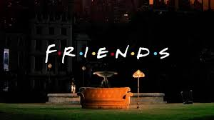

How I Met Your Mother
How I Met Your Mother, or HIMYM is about a man telling his children the stories of his and his friends youth, up to meeting his children's mother. Very realistic but with some crazy stories. The show is based in New York City. It is nine seasons of pure entertainment. Very known show with actors such as Josh Radnor, Jason Segel, and Neil Patrick Harris. If you like F.R.I.E.N.D.S watch this. The show is perfect for a person looking for entertainment.
Brooklyn Nine-Nine
This show, much like HIMYM is a show made to be funny, but it also manages to put in just an inch of reality. The show revolves around Det. Jake Peralta and his precinct, cracking cases and felanies together. This amazing comedy started 2013 and since then has made a bunch of fans. The show has excellent actors, for example; Andy Samberg, Terry Crews and more. The characters are well written with different personalities and likable in different ways. So good it's rewatchable.
Friends
The classical comedy series with a twist of reality. The show that made the start of many today wellknown actors and actresses like Jennifer Aniston and Matt LeBlanc. This show is based on six friends working their way trough adulthood with lots of sarcasm and jokes. Watch Chandler, Monica, Rachel, Ross, Joey, and Phoebe struggle their way trough life with heartbreak, loss of jobs, and important decisions in everyones favorite show. Gives both the comical and entertaining part, highly recommended for most.
Star Wars
This famous story based in space has something for everyone with two different trilogies, another one currently being produced, and a lone film. There are also two animated series, hundreds of comics, and a bunch of fanfilms. The franchise is a big name in the movie industry and has one of the best movie effects in the business. These movies helped develop sci-fi with a huge number of fans and therefore a big number of new sci-fi movies. For everyone interested in sci-fi or fantasy movies, these are a must watch.